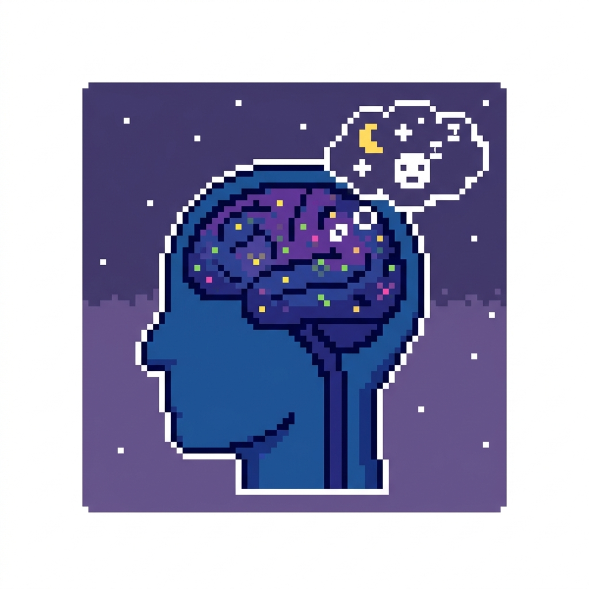
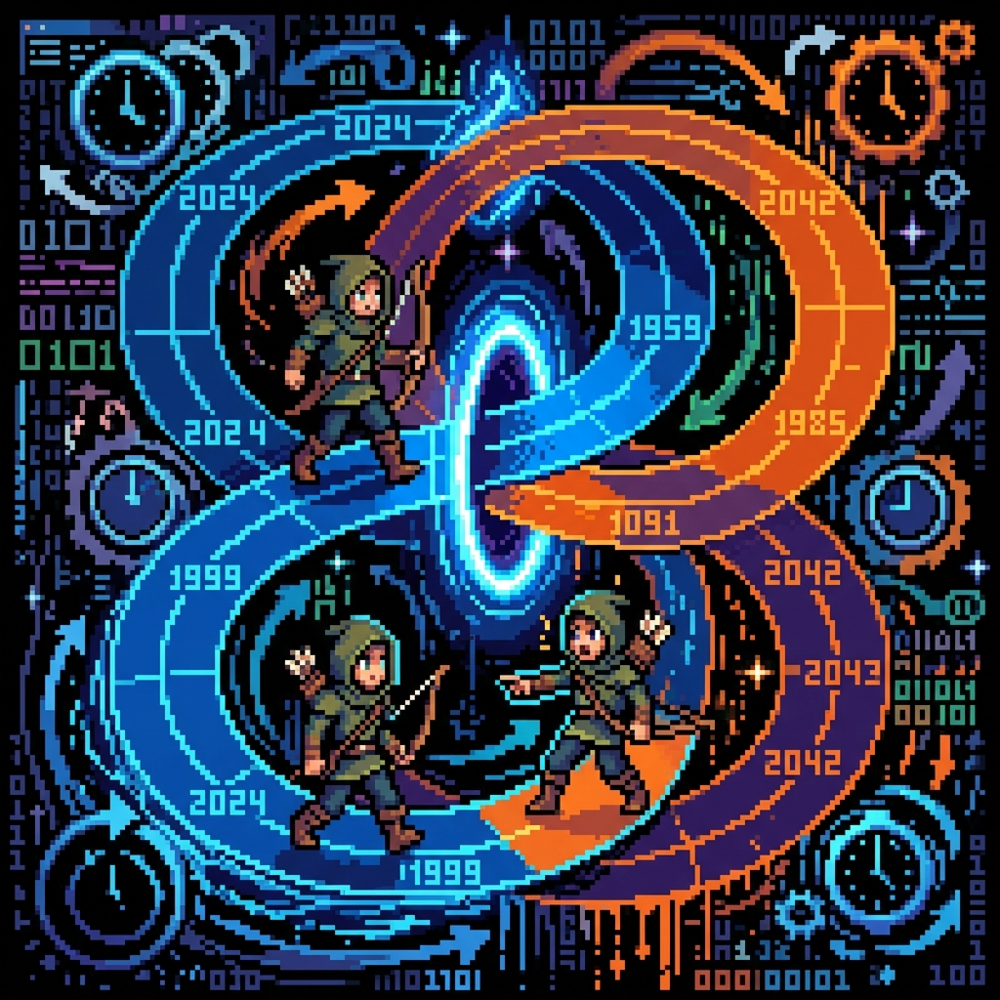

Meu primeiro post
Por: Saul Hernandez
Boas-vindas ao meu novo blog! Aqui vou compartilhar dicas de programação e curiosidades da área de tecnologia.
vou compartilhar conhecimentos sobre tecnologia e programação
Por: Saul Hernandez
Boas-vindas ao meu novo blog! Aqui vou compartilhar dicas de programação e curiosidades da área de tecnologia.
Por: Saul Hernandez
Os sobrenomes surgiram por uma necessidade prática: diferenciar pessoas com o mesmo nome. Na Idade Média, com o crescimento das cidades e do comércio, ter apenas um nome próprio já não era suficiente para a cobrança de impostos, registros de propriedade ou contratos civis.

Por: Saul Hernandez
Os sonhos ocorrem no sono REM, quando o cérebro fica ativo — focando em emoções e memórias — enquanto o corpo permanece paralisado. Como a área responsável pela lógica fica menos ativa, achamos que tudo é real, apesar do ilogismo. Esse processo ajuda a consolidar memórias, organizar emoções e "limpar" o cérebro.

Por: Saul Hernandez
Os paradoxos temporais são contradições lógicas causadas por alterações na relação de causa e efeito ao viajar ao passado. Os principais exemplos são o **Paradoxo do Avô** (impedir o próprio nascimento) e o **Paradoxo do Bootstrap** (informação ou objeto num ciclo infinito sem origem). Para resolvê-los, a física teórica sugere que o passado é inalterável ] (Princípio de Novikov) ou que as mudanças criam linhas temporais em universos paralelos.